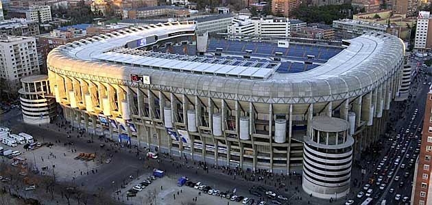
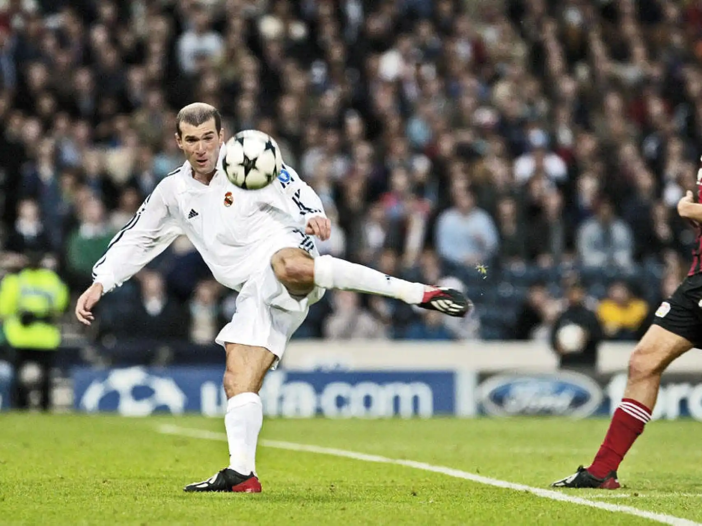
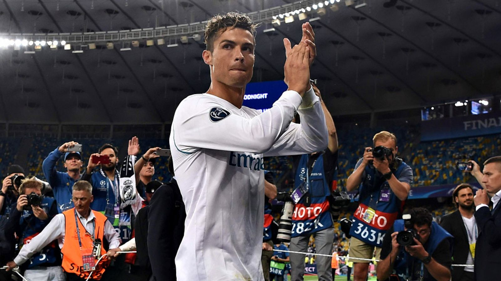

Alfredo Di Stéfano posant amb les 5 Champions League que va guanyar.Santiago Bernabéu de Yeste, considerat juntament amb Florentino Pérez el millor president de la història del Reial Madrid.Paco Gento, jugador de la història que més cops ha guanyat la Lliga de Campions, amb 6 vegades.La Quinta del Buitre, qui va arribar a guanyar 5 Lligues Espanyoles consecutives.Estadi de Chamartín, quan es va inaugurar, al 1947. Posteriorment, al 1955, va ser reanomenat com a Santiago Bernabéu.

Estadi Santiago Bernabéu al 2010, quan va acollir la final de la Champions League entre el Inter de Milá i el Bayern de Munich.Estadi Santiago Bernabéu en el 2024, després de la seva més recent remodelació.Florentino Pérez amb Luis Figo, gràcies al qual va ser escollit com a president a l'any 2000.Florentino posant, al 2003, amb uns dels seus fitxatges de més renom: Beckham, Figo, Zidane i Ronaldo.

Gol de volea de Zinedine Zidane, amb el qual el Reial Madrid va guanyar la Champions League a l'any 2002.Presentació de Cristiano Ronaldo com a jugador del Reial Madrid, a l'any 2009.Gol de cap de Sergio Ramos, al minut 93, en la Final de Champions que va acabar guanyant el Reial Madrid contra l'Atlético de Madrid.Zidane posant amb una de les tres Champions League que va guanyar com entrenador.

Últim partit de Cristiano Ronaldo com a jugador del Reial Madrid.Presentació de Mbappe com a nou jugador del Reial Madrid, a l'any 2024.